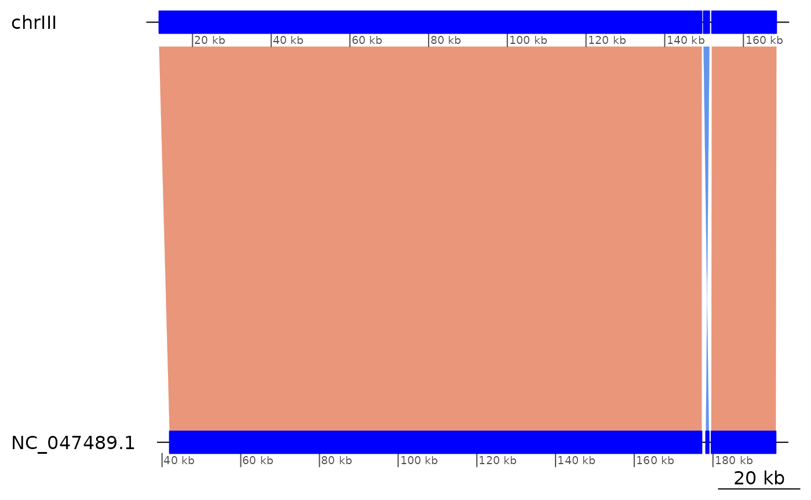
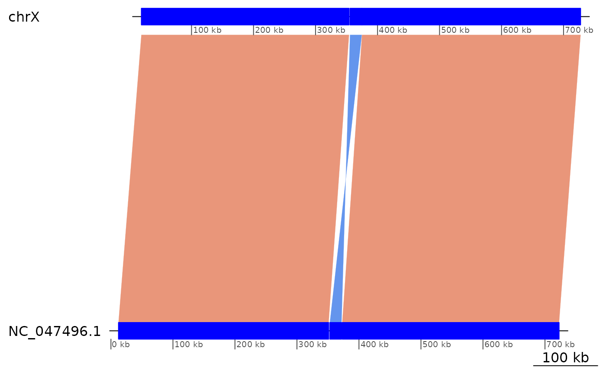

Introduction to GenomicBreaks
Charlotte West
Charles Plessy
15 July, 2025
Source:vignettes/GenomicBreaks.Rmd
GenomicBreaks.Rmd
knitr::opts_chunk$set(cache = TRUE)
knitr::opts_knit$set(verbose = TRUE)Introduction
The GenomicBreaks R package contains tools for visualising and analysing characteristics associated with breakpoints between pairs of genomes.
Load pacakges
By loading GenomicBreaks, the GenomicRanges package is automatically loaded too. But we have to load ggplot2 if we want to customise the output of the plotting functions of GenomicBreaks.
We will use yeast data as an example. The genome of Saccharomyces
cerevisiae is available in Bioconductor so let’s load its BSgenome
package. After loading a Scerevisiae object is invisibly
exported.
library("BSgenome.Scerevisiae.UCSC.sacCer3") |> suppressPackageStartupMessages()Example data
This package contains example data files representing the alignment of two closely related Saccharomyces yeast genomes, and of two more distantly related homologous chromosomes of Sordariomycetes filamentous fungi.
Saccharomyces cerevisiae – S. paradoxus
Alignment of the Saccharomyces paradoxus genome version
ASM207905v1 to the SacCer3 reference genome of
S. cerevisiae, produced with the Nextflow pairwise
alignment pipeline and converted to GFF3
format with the maf-convert gff -J 1000000 command of the
LAST
package.
Note that the since GenomicBreaks can also load alignments
in MAF format directly, (see load_genomic_breaks()) you
usually do not need to convert the pipeline output to GFF3 format.
exdata_Sac <- system.file("extdata/SacCer3__SacPar.gff3.gz", package = "GenomicBreaks")Neurospora crassa chromosome III – Podospora comata chromosome 7
Alignment of the Neurospora crassa genome version
NC12 downloaded from ENSEMBL 52, to the Podospora
comata genome version ASM1735489v1 downloaded from
GenBank, produce with the same commands as above. The
alignment was then filtered to reduce the size and complexity of the
example data, by retaining only the matches between chromosome III and
chromosome 7 (CP071499).
exdata_Neu <- system.file("extdata/NeuCra__PodCom.III__7.gff3.gz", package = "GenomicBreaks")GBreaks objects
Pairwise genome alignments are loaded in GBreaks()
objects that wrap the GRanges class. By convention, we
write that the query genome (the one that was provided as a
FASTA file) is aligned to the target genome (the one that was
indexed by the aligner). The target genome (on the left) is the
main part of the object, and the query genome information
(right) is contained in the metadata columns (mcols) of the
structure. Information on contig or scaffold length is optionaly loaded
from BSgenome objects, from which seqinfo data
is extracted and passed to the GRanges. By convention,
strand information of the alignment is held by the target
GRanges, and the query GRanges are
strandless. The objects are sorted by seqname first.
gb <- load_genomic_breaks(exdata_Sac, Scerevisiae)
gb## GBreaks object with 505 ranges and 2 metadata columns:
## seqnames ranges strand | score query
## <Rle> <IRanges> <Rle> | <numeric> <GRanges>
## [1] chrI 5860-10010 + | 10609 NC_047487.1:8723-12716
## [2] chrI 11157-11782 + | 1253 NC_047487.1:13035-13680
## [3] chrI 25371-26528 + | 3651 NC_047487.1:15380-16537
## [4] chrI 26849-29699 + | 6130 NC_047487.1:17263-20175
## [5] chrI 29937-30607 + | 767 NC_047487.1:20203-20866
## ... ... ... ... . ... ...
## [501] chrM 67039-67870 + | 1441 NC_018044.1:7758-8439
## [502] chrM 68205-68580 + | 830 NC_018044.1:8783-9180
## [503] chrM 69178-76168 + | 14528 NC_018044.1:9650-16261
## [504] chrM 77356-80022 + | 8066 NC_018044.1:53206-55865
## [505] chrM 80919-85779 + | 6712 NC_018044.1:57885-61592
## -------
## seqinfo: 17 sequences (1 circular) from sacCer3 genome
gb$query## GRanges object with 505 ranges and 0 metadata columns:
## seqnames ranges strand
## <Rle> <IRanges> <Rle>
## [1] NC_047487.1 8723-12716 *
## [2] NC_047487.1 13035-13680 *
## [3] NC_047487.1 15380-16537 *
## [4] NC_047487.1 17263-20175 *
## [5] NC_047487.1 20203-20866 *
## ... ... ... ...
## [501] NC_018044.1 7758-8439 *
## [502] NC_018044.1 8783-9180 *
## [503] NC_018044.1 9650-16261 *
## [504] NC_018044.1 53206-55865 *
## [505] NC_018044.1 57885-61592 *
## -------
## seqinfo: 17 sequences from an unspecified genome; no seqlengths
# No BSgenome available for N. crassa and P. comata.
# This data does not contain match_part entries, so set the type parameter.
gb_Neu <- load_genomic_breaks(exdata_Neu, type = "match")Maniuplation of GBreaks objects with plyranges
With the plyranges Bioconductor package it is easy to
manipulate GBreaks objects, in particular when filtering on
features of the query genome. This package is not automatically
installed; so you may need to do it yourself.
# BiocManager::install('plyranges')
# Subset for chrI on the target genome.
gb |> plyranges::filter(seqnames == "chrI")## GBreaks object with 22 ranges and 2 metadata columns:
## seqnames ranges strand | score query
## <Rle> <IRanges> <Rle> | <numeric> <GRanges>
## [1] chrI 5860-10010 + | 10609 NC_047487.1:8723-12716
## [2] chrI 11157-11782 + | 1253 NC_047487.1:13035-13680
## [3] chrI 25371-26528 + | 3651 NC_047487.1:15380-16537
## [4] chrI 26849-29699 + | 6130 NC_047487.1:17263-20175
## [5] chrI 29937-30607 + | 767 NC_047487.1:20203-20866
## ... ... ... ... . ... ...
## [18] chrI 197472-198417 + | 644 NC_047487.1:187015-188000
## [19] chrI 198484-200975 + | 9880 NC_047487.1:192875-195376
## [20] chrI 200976-204211 + | 11801 NC_047487.1:195559-198812
## [21] chrI 205647-208058 + | 8709 NC_047494.1:515228-517518
## [22] chrI 224773-227362 + | 11047 NC_047487.1:224711-227317
## -------
## seqinfo: 17 sequences (1 circular) from sacCer3 genome
# Subset for NC_047487.1 on the query genome
gb |> plyranges::filter(seqnames(query) == "NC_047487.1")## GBreaks object with 24 ranges and 2 metadata columns:
## seqnames ranges strand | score query
## <Rle> <IRanges> <Rle> | <numeric> <GRanges>
## [1] chrI 5860-10010 + | 10609 NC_047487.1:8723-12716
## [2] chrI 11157-11782 + | 1253 NC_047487.1:13035-13680
## [3] chrI 25371-26528 + | 3651 NC_047487.1:15380-16537
## [4] chrI 26849-29699 + | 6130 NC_047487.1:17263-20175
## [5] chrI 29937-30607 + | 767 NC_047487.1:20203-20866
## ... ... ... ... . ... ...
## [20] chrI 200976-204211 + | 11801 NC_047487.1:195559-198812
## [21] chrI 224773-227362 + | 11047 NC_047487.1:224711-227317
## [22] chrVII 402974-403256 + | 730 NC_047487.1:179771-180020
## [23] chrVIII 527711-528802 + | 3617 NC_047487.1:202798-203906
## [24] chrVIII 530396-533532 + | 6424 NC_047487.1:205275-208524
## -------
## seqinfo: 17 sequences (1 circular) from sacCer3 genome## GBreaks object with 3 ranges and 3 metadata columns:
## seqnames ranges strand | score query Width
## <Rle> <IRanges> <Rle> | <numeric> <GRanges> <integer>
## [1] chrI 5860-10010 + | 10609 NC_047487.1:8723-12716 4151
## [2] chrI 11157-11782 + | 1253 NC_047487.1:13035-13680 626
## [3] chrI 25371-26528 + | 3651 NC_047487.1:15380-16537 1158
## -------
## seqinfo: 17 sequences (1 circular) from sacCer3 genome## GBreaks object with 3 ranges and 2 metadata columns:
## seqnames ranges strand | score query
## <Rle> <IRanges> <Rle> | <integer> <GRanges>
## [1] chrI 5860-10010 + | 4151 NC_047487.1:8723-12716
## [2] chrI 11157-11782 + | 626 NC_047487.1:13035-13680
## [3] chrI 25371-26528 + | 1158 NC_047487.1:15380-16537
## -------
## seqinfo: 17 sequences (1 circular) from sacCer3 genome
# Etc…See the vignette of plyranges for more details.
Subsetting with core Bioconductor functions
Some core Bioconductor functions from the GenomicRanges
package have been adapted to work on GBreaks objects.
The ?%in% operator returns a TRUE or
FALSE value per element in its first argument if they match
in the second argument. Here is a toy example:
gb[4:5] %in% gb## [1] TRUE TRUEFor ?subsetByOverlaps, one match on either the
target or the query genome is enough.
gb |> subsetByOverlaps(GRanges("chrI:200000-240000"))## GBreaks object with 4 ranges and 2 metadata columns:
## seqnames ranges strand | score query
## <Rle> <IRanges> <Rle> | <numeric> <GRanges>
## [1] chrI 198484-200975 + | 9880 NC_047487.1:192875-195376
## [2] chrI 200976-204211 + | 11801 NC_047487.1:195559-198812
## [3] chrI 205647-208058 + | 8709 NC_047494.1:515228-517518
## [4] chrI 224773-227362 + | 11047 NC_047487.1:224711-227317
## -------
## seqinfo: 17 sequences (1 circular) from sacCer3 genome
gb |> subsetByOverlaps(GBreaks( target = GRanges("chrI:200000-240000")
, query = GRanges("NC_047494.1:200000-800000")))## GBreaks object with 14 ranges and 2 metadata columns:
## seqnames ranges strand | score query
## <Rle> <IRanges> <Rle> | <numeric> <GRanges>
## [1] chrI 198484-200975 + | 9880 NC_047487.1:192875-195376
## [2] chrI 200976-204211 + | 11801 NC_047487.1:195559-198812
## [3] chrI 205647-208058 + | 8709 NC_047494.1:515228-517518
## [4] chrI 224773-227362 + | 11047 NC_047487.1:224711-227317
## [5] chrVIII 214336-237947 + | 98269 NC_047494.1:199224-222890
## ... ... ... ... . ... ...
## [10] chrVIII 392227-463918 + | 286060 NC_047494.1:377750-449530
## [11] chrVIII 463919-466794 + | 11508 NC_047494.1:449874-452585
## [12] chrVIII 466808-520394 + | 223091 NC_047494.1:452922-506473
## [13] chrVIII 520644-523428 + | 5768 NC_047494.1:506784-509589
## [14] chrVIII 523430-526473 + | 5029 NC_047494.1:509966-512985
## -------
## seqinfo: 17 sequences (1 circular) from sacCer3 genomeArms
If the positions of the centromeres are known, an annotation file can
be crafted to indicate the coordinates of the short and long arms, and
the function flagLongShort() can be used to transfer this
annotation to the GBreaks object.
annot <- GRanges(c("chrI:1-151465", "chrI:151582-230218"))
annot$Type <- c("short", "long")
flagLongShort(gb, annot)## GBreaks object with 505 ranges and 3 metadata columns:
## seqnames ranges strand | score query
## <Rle> <IRanges> <Rle> | <numeric> <GRanges>
## [1] chrI 5860-10010 + | 10609 NC_047487.1:8723-12716
## [2] chrI 11157-11782 + | 1253 NC_047487.1:13035-13680
## [3] chrI 25371-26528 + | 3651 NC_047487.1:15380-16537
## [4] chrI 26849-29699 + | 6130 NC_047487.1:17263-20175
## [5] chrI 29937-30607 + | 767 NC_047487.1:20203-20866
## ... ... ... ... . ... ...
## [501] chrM 67039-67870 + | 1441 NC_018044.1:7758-8439
## [502] chrM 68205-68580 + | 830 NC_018044.1:8783-9180
## [503] chrM 69178-76168 + | 14528 NC_018044.1:9650-16261
## [504] chrM 77356-80022 + | 8066 NC_018044.1:53206-55865
## [505] chrM 80919-85779 + | 6712 NC_018044.1:57885-61592
## Arm
## <factor>
## [1] short
## [2] short
## [3] short
## [4] short
## [5] short
## ... ...
## [501] NA
## [502] NA
## [503] NA
## [504] NA
## [505] NA
## -------
## seqinfo: 17 sequences (1 circular) from sacCer3 genomeMeasures of distance
Synteny index
Ad-hoc index measuring to what extent a scaffold of the
target genome is mostly aligned to a single scaffold in the
query genome. See ?synteny_index for details. One
limitation to the use of this index is that it requires that at least
the query genome is a complete chromosome assembly.
synteny_index(gb)## [1] 0.9954872
synteny_index(swap(gb))## [1] 0.9954982Correlation
Ad-hoc index measuring the correlation of the coordinates of the
syntenic alignments in scaffolds of a target genome and their
best match in the query genome. See
?correlation_index for details. This index is more robust
to the presence of uncollapsed haplotypes in the query
genome.
## [1] 0.9942222
correlation_index(swap(gb))## [1] 0.9946129
correlation_index(gb_Neu)## [1] -0.7223019Gene Order Conservation
The GOC() function calcluates the Gene Order
Conservation number defined by Rocha (2003, https://doi.org/10.1016/j.tig.2003.09.011) as “the
average number of orthologues for which the consecutive orthologue
co-occurs close by in the other genome. It varies between 0 (no
co-occurrence) and 1 (complete gene order conservation)”.
Note that calculating GOC on whole-genome alignments is not
expected to produce meaningful results, and the example below is just to
show that the computation is possible. This function is more useful when
comparing the position of orthologues, represented in a
GBreaks object.
GOC(gb)## [1] 0.9227557## [1] 0.9123173
GOC(gb_Neu)## [1] 0.5137363Strand randomisation index
The ?strand_randomisation_index tends towards zero when
within each feature of the target genome there are as many
bases aligned to the plus and on the minus strands. It tends towards 1
when within each feature most bases are aligned to the same strand.
## [1] 0.989879
strand_randomisation_index(gb_Neu)## [1] 0.01298783Coalescing alignments
Large syntenic regions can often appear cluttered with alignment
breaks, spanning just a few basepairs. They are either an artefact (for
instance in case of incomplete purge of haplotypes) and or true
breakpoint. The algorithm in coalesce_contigs() is used to
produce a new GRanges object with fewer alignment breaks by coalescing
alignments separated by short (user specified) distances. This distance
need be agreeable in both the target and query genome in order for the
coalescion to happen.
For example, coalescing gaps of less than 500 basepairs in the
gb alignment:
coa <- coalesce_contigs(gb)
length(gb)## [1] 505
length(coa)## [1] 88The resulting GBreaks object has far fewer alignments
and therefore far fewer alignment stops. The algorithm is an initial
step in alignment stop filtering, with the goal of a reduced number of
alignment stops that have a high probability of being breakpoints.
Genome plots with genoPlotR
Plotting alignments versus plotting coalesced regions
To visualise synteny it is clearer to plot from the coalseced objects.
plotApairOfChrs(gb, "chrI", main = "S. cerevisiae / S. paradoxus")
plotApairOfChrs(coa, "chrI", main = "S. cerevisiae / S. paradoxus")
Flipping a chromosome
In the genome sequences of N. crassa and P. comata,
the homologous chromosomes III and 7 have been
assembled on reverse orientations. It is possible to
“reverse-complement” a sequence feature with the
?reverse function of GenomicBreaks. To
reverse-complement a sequence, one needs to know its length. When this
information is not available in the seqlengths slot of the
object, the GenomicBreaks function
?forceSeqLengths can be used to estimate it based on the
coordinate of the most distal alignment.
plotApairOfChrs(gb_Neu, main = "Neurospora crassa chrIII / Podospora comata chr7")
gb_Neu |> forceSeqLengths() |> reverse(query = TRUE) |>
plotApairOfChrs(main = "Neurospora crassa chrIII / Podospora comata chr7 (rev-complemented)")“Oxford” dot plots
The function makeOxfordPlots() outputs “Oxford”
macrosynteny plots in which all the sequence levels are merged.
makeOxfordPlots(gb)
makeOxfordPlots(gb_Neu, col = "strand") +
ggtitle("N. crassa chrIII vs P. comata chr7 “Oxford” plot")The plots are ggplot2 objects that can be further
customised. Also, when there is only one sequence levels in the
target or query genomes, their name is displayed, and
addition of numeric scales show meaningful coordinates.
makeOxfordPlots(gb |> plyranges::filter(seqnames == "chrI",
seqnames(query) == "NC_047487.1")) +
scale_x_continuous() + scale_y_continuous() +
theme_bw() +
theme(legend.position="none") +
ggtitle("sacCer3 vs sacPar “Oxford” plot")## Scale for x is already present.
## Adding another scale for x, which will replace the existing scale.
## Scale for y is already present.
## Adding another scale for y, which will replace the existing scale.
Pass type = 'none' to receive a ggplot
object with no layer, that you can customise at wish.
Genomic sequences
You can retrieve the genomic sequences of the ranges in the
GBreaks objects provided that a BSgenome
packages are available and were indicated at load time.
getSeq(gb)## DNAStringSet object of length 505:
## width seq
## [1] 4151 GTTTAGAATACTAGAATGATAACTGCATTCGG...TTTGCATCTTGGCTGCAAAGAAGAATGAATCG
## [2] 626 TTACAAACTTTATGTTTTTAGGTGTATTTGCA...CTTGGTGTTGCCAGTTTCGGATACAGAAACAA
## [3] 1158 AGAAGATGACAAACTGGATGAGATGGCAGTAG...ACAATGATGGTCTCATCAGTTGGCAAACCATT
## [4] 2851 TCCATGGCTCAGTTGTAGTTATGGCAGTAGTG...ACAATGAAAATCAGTTCATGGAATAGTTGCCT
## [5] 671 AAATCATTGACAGGGCATGAGTTACGTCAATC...TCAAGGCATTTATCGTTCAAAATGGCGATCAT
## ... ... ...
## [501] 832 TATATATTATGTATAAACAATAGAGAATATTG...ATATTATAAATATATATATATATATAAATATT
## [502] 376 TATATATTATTAATATATTAAATTTTATAATA...ATTAATTAATATTTTATAATAAATAAATAAAA
## [503] 6991 TTATTATTATATTTTTTTTAATAAAGGAAAAT...CTTTTAATAATATTCTTTTATTCTTTATTATT
## [504] 2667 TATATATTATGTATTATTATATAAATATATAT...TATACGTAGTCTTCTACTGATGAGGAGTCTAA
## [505] 4861 AAAATAAAAATATATATATATATATAAATGAT...GAAATATGCTTAATTATAATATAATATCCATATrivial translocations
Definitions
Remember that we are working with one-to-one alignments. Therefore deletions, insertions and as a consequence copy number variations, are not in the aligned regions. Nevertheless, we can detect translocations from one chromosomal region to another. We define them by alignment pairs that interrupt the colinearity between two other pairs, and that are not inversions.
Representation
The translocation below:
┌──────────────┬──────────────┬──────────────┐
│ chrA:101-200 │ chrA:201-300 │ chrA:301-400 │ (Target genome)
└──────────────┴──────────────┴──────────────┘
+ + + (Alignment direction)
┌──────────────┬──────────────┬──────────────┐
│ chrB:101-200 │ chrC:201-300 │ chrB:301-400 │ (Query genome)
└──────────────┴──────────────┴──────────────┘Is represented as:
exampleTranslocation## GBreaks object with 3 ranges and 1 metadata column:
## seqnames ranges strand | query
## <Rle> <IRanges> <Rle> | <GRanges>
## [1] chrA 100-200 + | chrB:100-200
## [2] chrA 201-300 + | chrC:201-300
## [3] chrA 301-400 + | chrB:301-400
## -------
## seqinfo: 1 sequence from an unspecified genome
plotApairOfChrs(exampleTranslocation)
See
vignette("StructuralVariants", package = "GenomicBreaks")
for other examples of translocations.
Note also that without an outgroup it is not possible to know in which genome the move happened.
Detection
flagTranslocations(exampleTranslocation)## GBreaks object with 3 ranges and 2 metadata columns:
## seqnames ranges strand | query tra
## <Rle> <IRanges> <Rle> | <GRanges> <Rle>
## [1] chrA 100-200 + | chrB:100-200 TRUE
## [2] chrA 201-300 + | chrC:201-300 FALSE
## [3] chrA 301-400 + | chrB:301-400 FALSE
## -------
## seqinfo: 1 sequence from an unspecified genome## GBreaks object with 32 ranges and 3 metadata columns:
## seqnames ranges strand | query score tra
## <Rle> <IRanges> <Rle> | <GRanges> <integer> <Rle>
## 1 chrI 5860-184523 + | NC_047487.1:8723-169504 178664 TRUE
## 2 chrI 184533-184781 + | NC_047487.1:176430-176696 249 TRUE
## 3 chrI 185343-187499 + | NC_047487.1:170368-174401 2157 FALSE
## 4 chrI 187502-189195 + | NC_047487.1:177293-179769 1694 FALSE
## 12 chrIII 151968-168384 + | NC_047489.1:179584-195977 16417 TRUE
## .. ... ... ... . ... ... ...
## 64 chrXIV 777507-778973 - | NC_047491.1:15022-16471 1467 FALSE
## 65 chrXIV 778976-781047 + | NC_047500.1:768251-770345 2072 FALSE
## 72 chrXV 855061-968849 + | NC_047501.1:832989-947263 113789 TRUE
## 73 chrXV 969434-970268 - | NC_047501.1:953757-954546 835 FALSE
## 74 chrXV 976413-980862 + | NC_047501.1:948879-953466 4450 FALSE
## -------
## seqinfo: 17 sequences (1 circular) from sacCer3 genome
plotApairOfChrs(coa, chrT = "chrI", xlim = gb2xlim(coa[2:4]))
Trivial inversions
See
vignette("StructuralVariants", package = "GenomicBreaks")
for definitions.
Number of trivial inversions
More inversions are found after coalescing colinear blocks because of
situations where + - + was + - - + before
collapsing.
flagInversions(coa)## GBreaks object with 88 ranges and 3 metadata columns:
## seqnames ranges strand | query score
## <Rle> <IRanges> <Rle> | <GRanges> <integer>
## [1] chrI 5860-184523 + | NC_047487.1:8723-169504 178664
## [2] chrI 184533-184781 + | NC_047487.1:176430-176696 249
## [3] chrI 185343-187499 + | NC_047487.1:170368-174401 2157
## [4] chrI 187502-189195 + | NC_047487.1:177293-179769 1694
## [5] chrI 189813-204211 + | NC_047487.1:180061-198812 14399
## ... ... ... ... . ... ...
## [84] chrM 6313-9737 - | NC_018044.1:62854-65728 3425
## [85] chrM 12828-50712 + | NC_018044.1:22453-53190 37885
## [86] chrM 56625-57960 + | NC_018044.1:70280-71345 1336
## [87] chrM 58008-76168 + | NC_018044.1:1-16261 18161
## [88] chrM 77356-85779 + | NC_018044.1:53206-61592 8424
## inv
## <Rle>
## [1] FALSE
## [2] FALSE
## [3] FALSE
## [4] FALSE
## [5] FALSE
## ... ...
## [84] FALSE
## [85] FALSE
## [86] FALSE
## [87] FALSE
## [88] FALSE
## -------
## seqinfo: 17 sequences (1 circular) from sacCer3 genome
showInversions(flagInversions(coa))## GBreaks object with 12 ranges and 3 metadata columns:
## seqnames ranges strand | query score
## <Rle> <IRanges> <Rle> | <GRanges> <integer>
## 10 chrIII 11513-149405 + | NC_047489.1:41910-177147 137893
## 11 chrIII 149866-151360 - | NC_047489.1:178201-178974 1495
## 12 chrIII 151968-168384 + | NC_047489.1:179584-195977 16417
## 34 chrVII 10270-110708 + | NC_047493.1:11332-110230 100439
## 35 chrVII 112352-121552 - | NC_047493.1:111748-121071 9201
## .. ... ... ... . ... ...
## 39 chrVII 823466-828795 - | NC_047493.1:792155-797486 5330
## 40 chrVII 828909-1076119 + | NC_047493.1:799044-1046538 247211
## 52 chrX 19114-354004 + | NC_047496.1:12159-351096 334891
## 53 chrX 355632-374591 - | NC_047496.1:353062-371883 18960
## 54 chrX 374938-727499 + | NC_047496.1:373079-722743 352562
## inv
## <Rle>
## 10 TRUE
## 11 FALSE
## 12 FALSE
## 34 TRUE
## 35 FALSE
## .. ...
## 39 FALSE
## 40 FALSE
## 52 TRUE
## 53 FALSE
## 54 FALSE
## -------
## seqinfo: 17 sequences (1 circular) from sacCer3 genome
showInversions(flagInversions(coa)) |> plyranges::slice(1:3) |> plotApairOfChrs()
showInversions(flagInversions(coa)) |> plyranges::slice(4:9) |> plotApairOfChrs()
showInversions(flagInversions(coa)) |> plyranges::slice(10:12) |> plotApairOfChrs()
Classification of the genomic regions of a genome by alignment properties.
We can classify aligned genomic regions as isolated or collinear, and unaligned regions as breakpoint or bridge regions. The bridge regions are always flanked by collinear alignments and the isolated alignments are always flanked by breakpoint regions.
wgo <- wholeGenomeClassification(gb, coa)
wgo## GRanges object with 981 ranges and 1 metadata column:
## seqnames ranges strand | type
## <Rle> <IRanges> <Rle> | <factor>
## [1] chrI 5860-10010 + | collinear alignment
## [2] chrI 10011-11156 + | bridge region
## [3] chrI 11157-11782 + | collinear alignment
## [4] chrI 11783-25370 + | bridge region
## [5] chrI 25371-26528 + | collinear alignment
## ... ... ... ... . ...
## [977] chrM 69178-76168 + | collinear alignment
## [978] chrM 76169-77355 * | breakpoint region
## [979] chrM 77356-80022 + | collinear alignment
## [980] chrM 80023-80918 + | bridge region
## [981] chrM 80919-85779 + | collinear alignment
## -------
## seqinfo: 17 sequences (1 circular) from sacCer3 genome
table(wgo$type)##
## isolated alignment collinear alignment breakpoint region bridge region
## 46 459 70 406